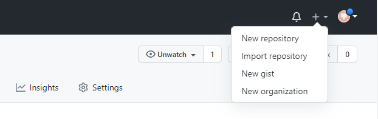
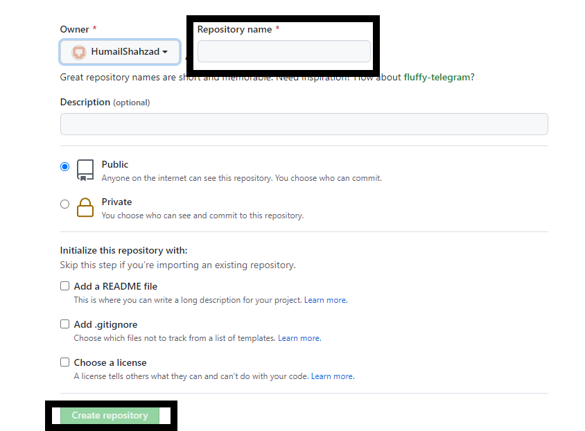
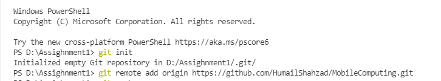
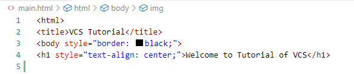
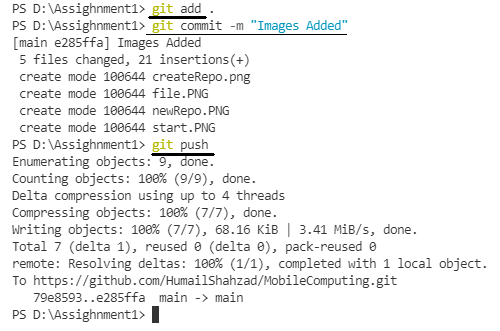
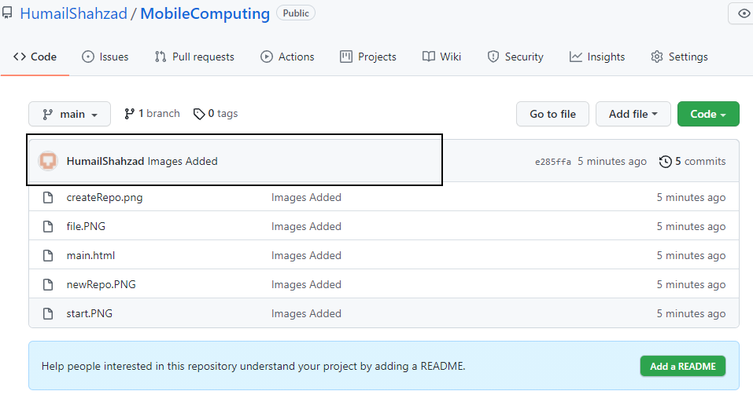

Welcome to Tutorial of VCS
What is version control?
Version control, also known as source control, is the practice of tracking and managing changes to software code. Version control systems are software tools that help software teams manage changes to source code over time. As development environments have accelerated, version control systems help software teams work faster and smarter.Version control software keeps track of every modification to the code in a special kind of database. If a mistake is made, developers can turn back the clock and compare earlier versions of the code to help fix the mistake while minimizing disruption to all team members
What are the advantages of using version control system?
As a single user the main advantages are:- Automatic backups: If you accidentally delete some file (or part of a file) you can undelete it. If you change something and want to undo it, the VCS can do so.
- Sharing on multiple computers: VCSes are designed to help multiple people collaboratively edit text files. This makes sharing between multiple computers (say your desktop and laptop) particularly easy. You do not need to bother if you always copied the newest version; the VCS will do that for you. Even if you are offline and change files on both computers, the VCS will merge the changes intelligently once you are online.
- Version control and branching: Say you published some class notes as a pdf and want to fix some typos in them while simultaneously working on the notes for next year. No problem. And you only need to fix the typos once, the VCS will merge them to the other versions.
What are the basic steps to get started?
Make a GitHub Account and create a repository

Provide repository name and then click create repository

Use git init command and add remote repository

Create a simple html file on local repository

Use git add command and then use git commit and git push

You can now view the changes made in your local repository on the web repository.The message given with the commit command is also visible along with time

- if you make changes in remote repository then it can synchronized with the local repository by using git pull
- changes are made on both local and remote repository then a Conflict occurs.It can aso be managed.
- Git also provides te featurs of branching.It allows you to make changes in your previos working code without loosing your progress.